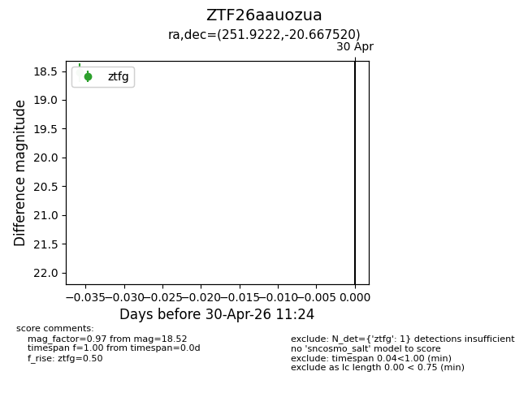
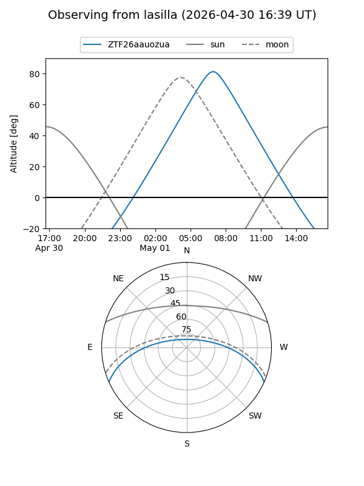
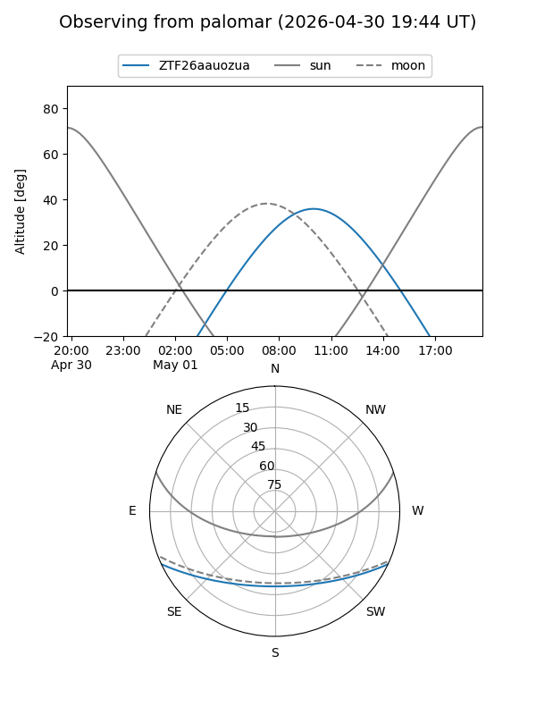

ZTF26aauozua
Target ZTF26aauozua at 2026-04-30 11:29
Aliases and brokers:
FINK: link
Lasair: link
ALeRCE: link
alt names
ZTF26aauozua (ztf,fink_ztf)
Coordinates:
equatorial (ra, dec) = 251.9222,-20.66752
equatorial (HMS+DMS) = 16:47:41.32,-20:40:03.07
galactic (l, b) = (359.3195,+15.49535)
Flags:
Photometry:
last ztfg=18.52
1 ztfg detections
Lightcurve

Visibility


Additional plots